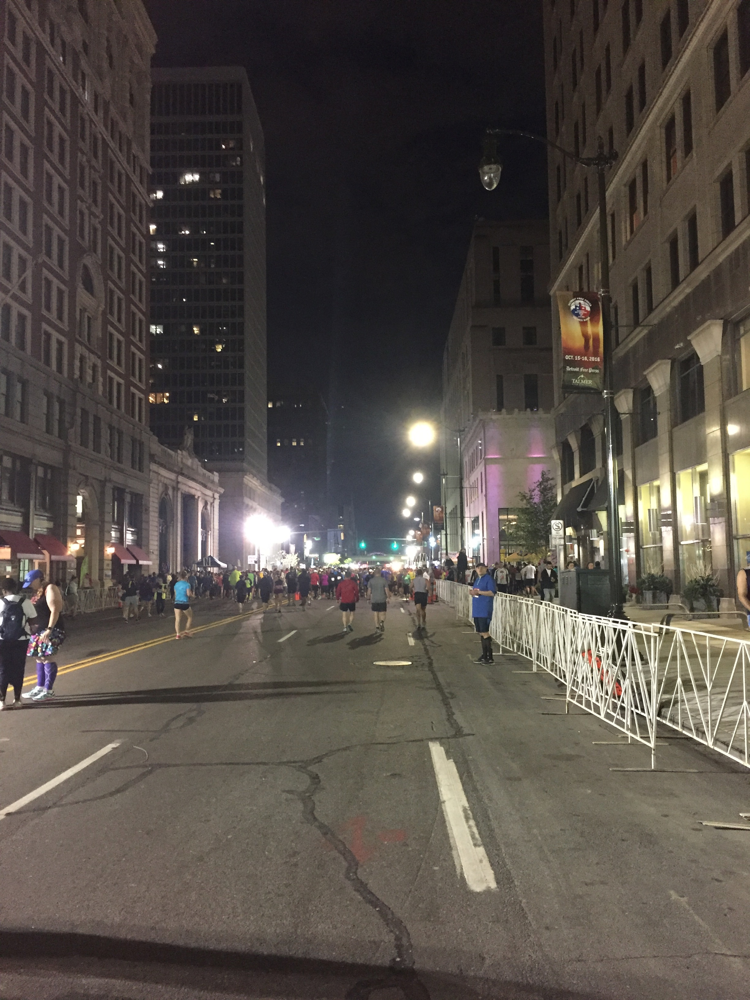
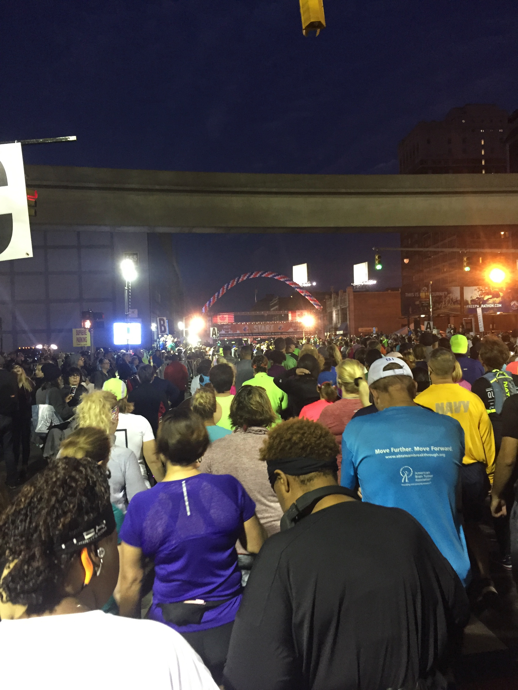
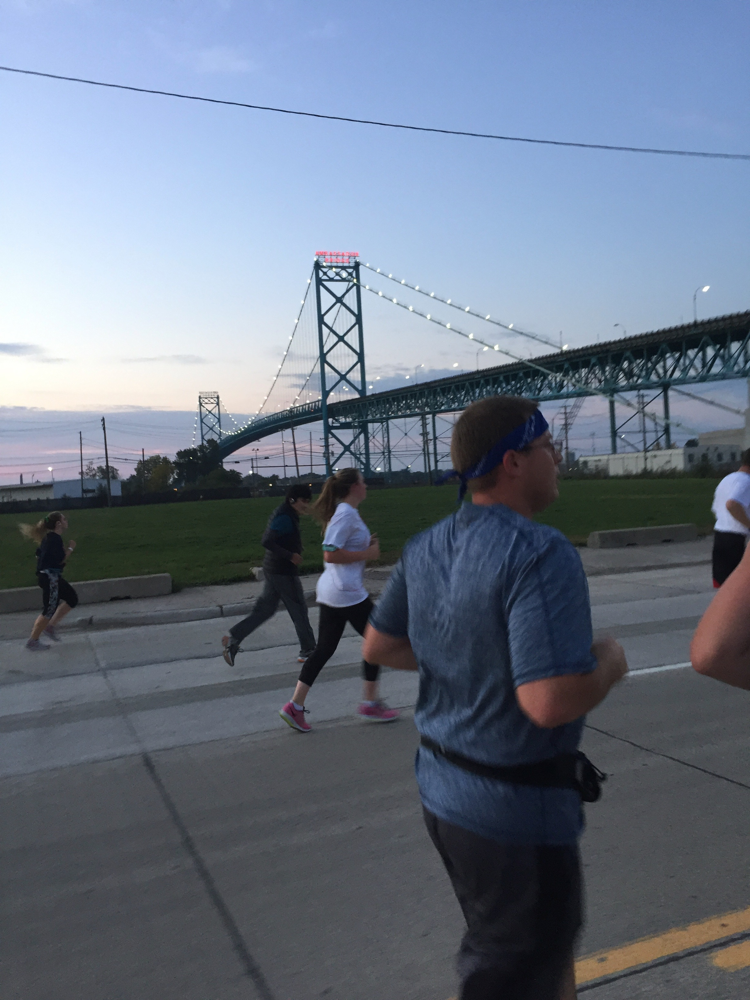
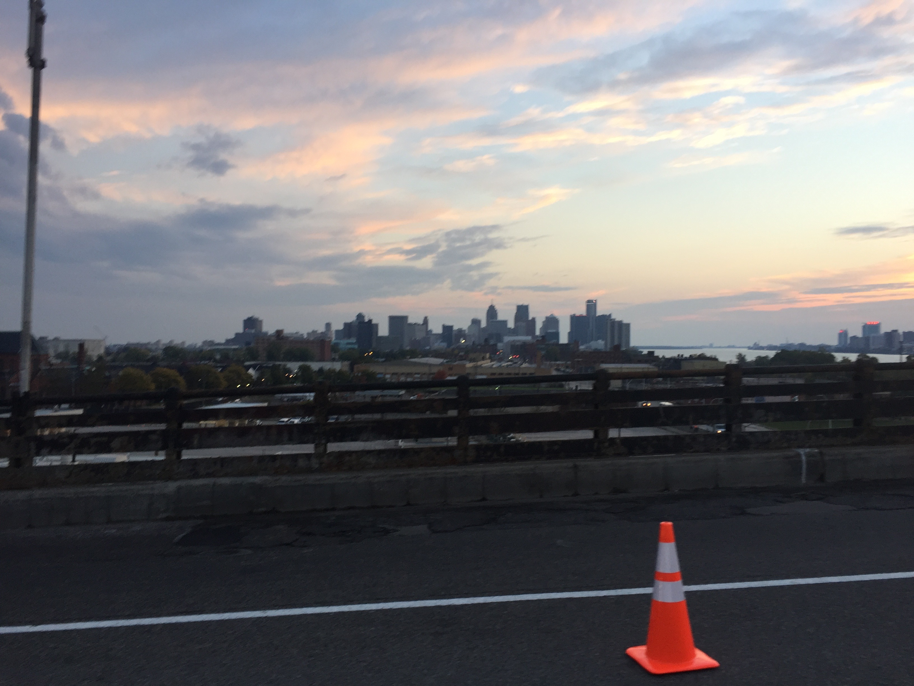
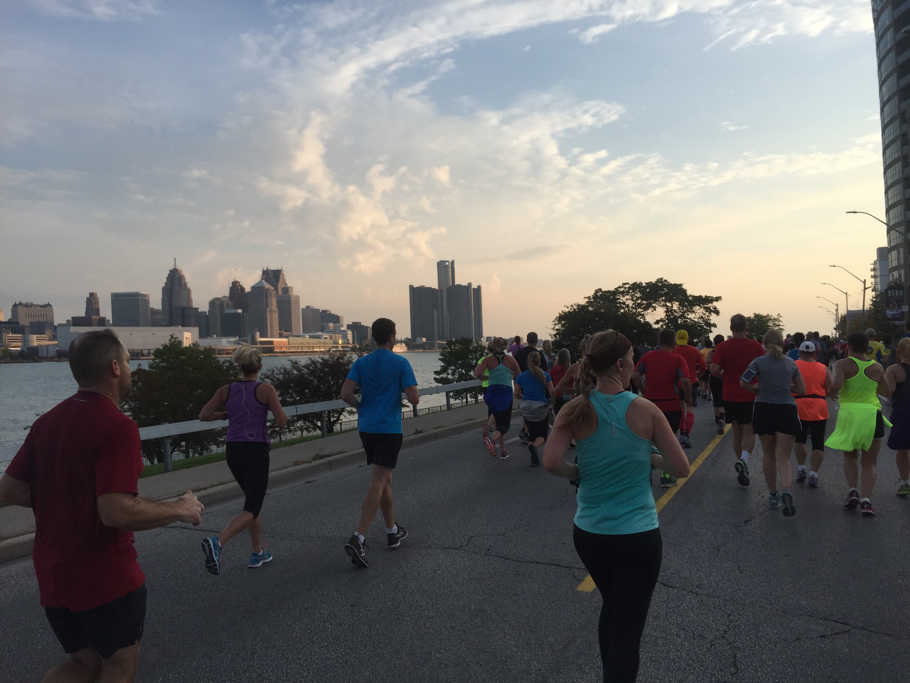
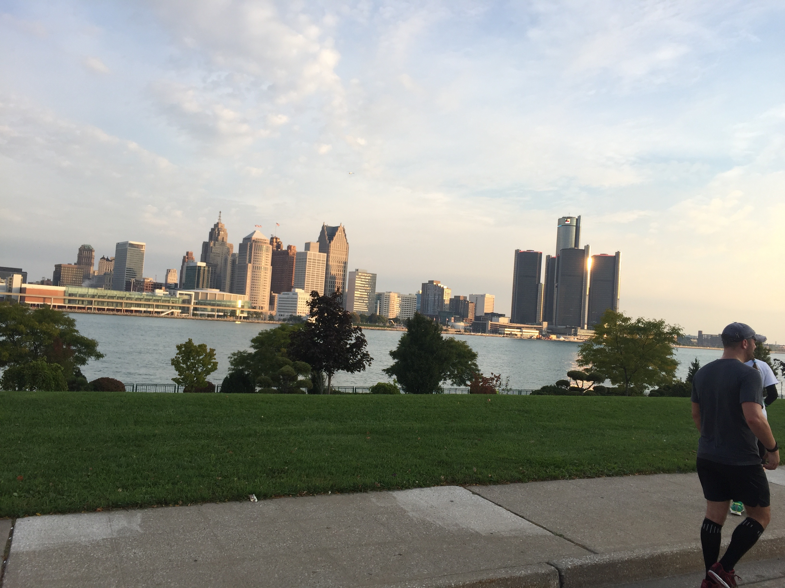
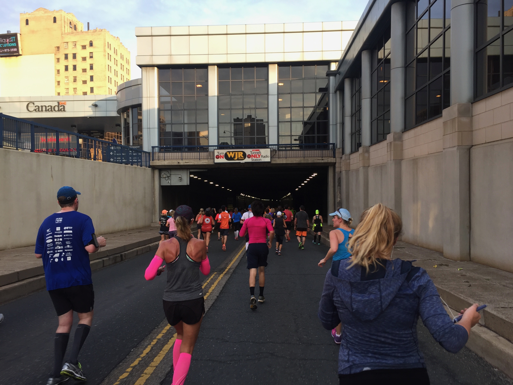
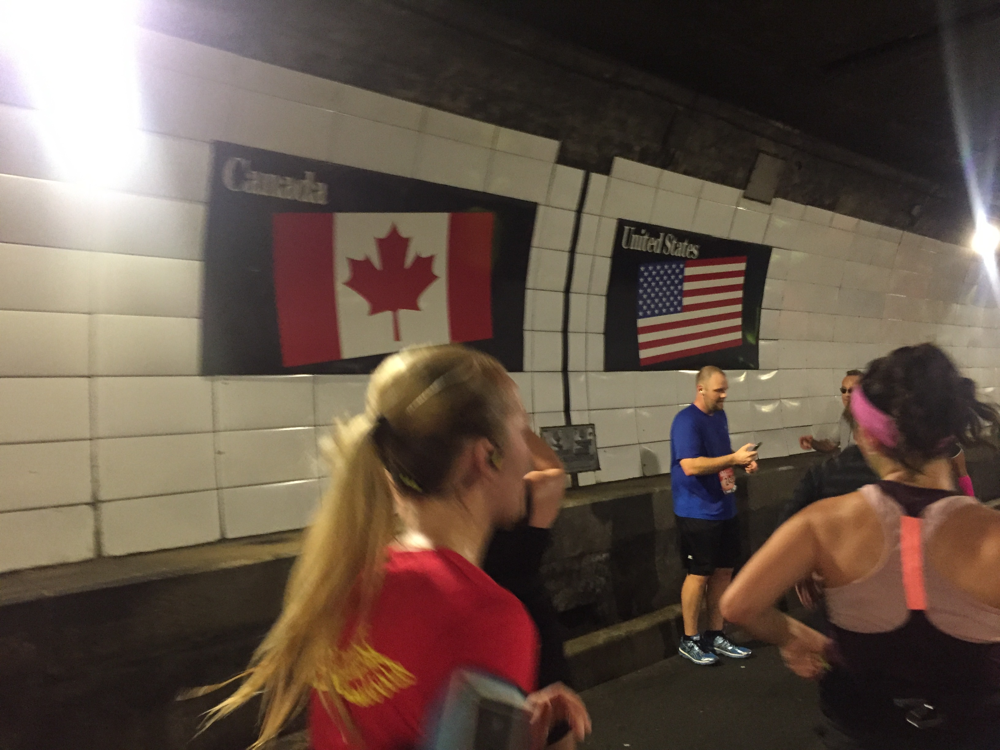
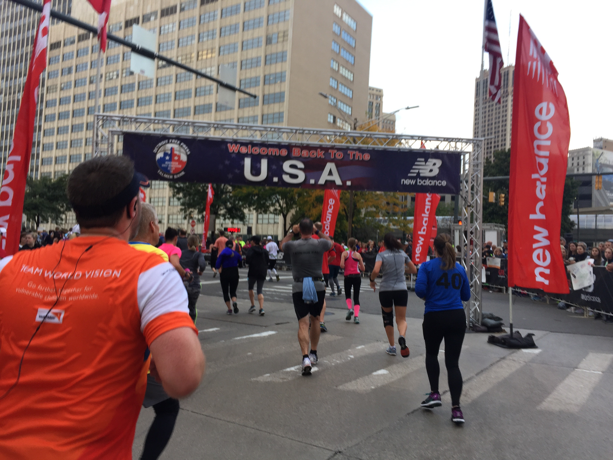
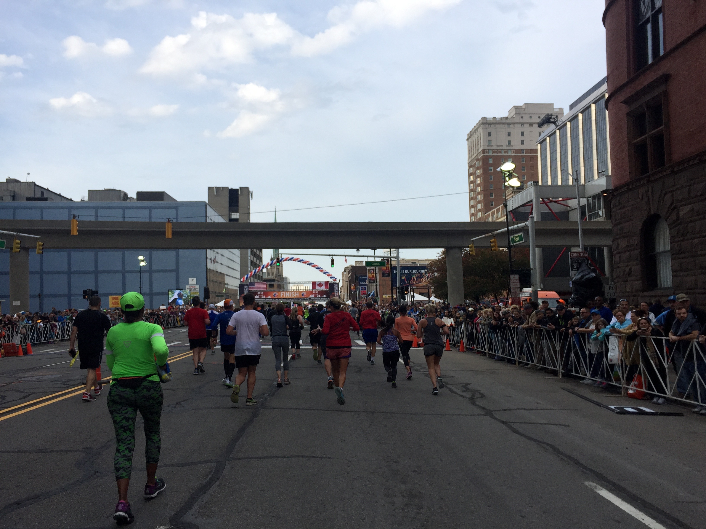

Yesterday I ran the half marathon in Detroit. This was my first ever half, with the furthest I've ever run prior being 8 miles. I successfully finished, with my goal of running the whole time, in 2 hours and 8 minutes. Here is a link to the Strava activity: link
I ran the race with my sister, and this was also her first half marathon. We arrived in downtown Detroit around 7am. It was very dark, humid, and the speaker system was broken so it only played music every 10 seconds for 1 second. It was loud, and disorienting.

We started in the very back with the last group. Which meant I would have to pass a lot of people over the next two hours, my guess is around 3-5 thousand. There were 13 thousand runners total.

About two miles into the race, the route crosses the Ambassador bridge into Canada.

The view of the city from the bridge was incredible.

After the bridge, while in Canada, the sun started to rise shining on Detroit.

The run was on the waterfront the whole time in Canada. There was a woman holding a sign just out of this photo that read "If Trump can run, so can you!"

The race continued through the under river tunnel back to the United States.

The tunnel was very hot and humid with huge fans circulating the air. I'd compare it to being inside a massive hairdryer. It was not very pleasant. This photo is of the underwater border between the US and Canada.

Back to the US for the final 3 miles.

The final 3 miles were the hardest on me. Looking at Strava apparently these were some of my fastest miles however, they felt misirable. For the final stretch, I ran as fast as I could (while also taking this picture).

All in all, it was a great race. Set a personal distance record and got to enjoy the race not only with my sister but with 3 friends as well.
My next major race is going to be the original marathon in Athens Greece which takes place in November 2017.